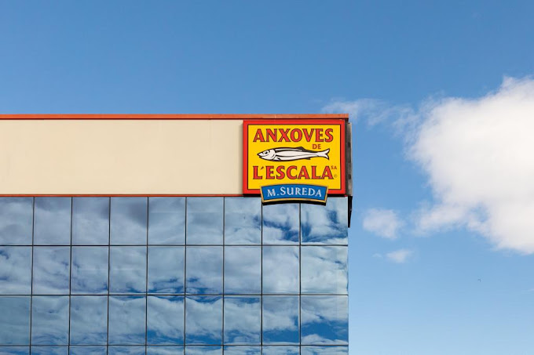

Nuestra tradición
Desde 1940 procesamos anchoas, salando el mejor pescado (anchoa) y preparando filetes semiconservados en aceite de oliva o marinados en vinagre. Seleccionamos cuidadosamente las materias primas utilizando los métodos y conocimientos tradicionales que se transmiten de generación en generación, ya que comenzaron en los siglos VI y V aC, con la llegada de los griegos y fenicios de Empúries, integrados en el término municipal de L'Escala, en la Costa Brava.
Esta técnica de conservación milenaria, que permite consumir capturas de verano de pescado fresco durante todo el año, fue seguida más tarde por la civilización romana.Actualmente, Anchoas de la Escala SA continúa con la misma tradición y nuestras 'Mujeres anchoeras' son las responsables de este proceso artesanal.
